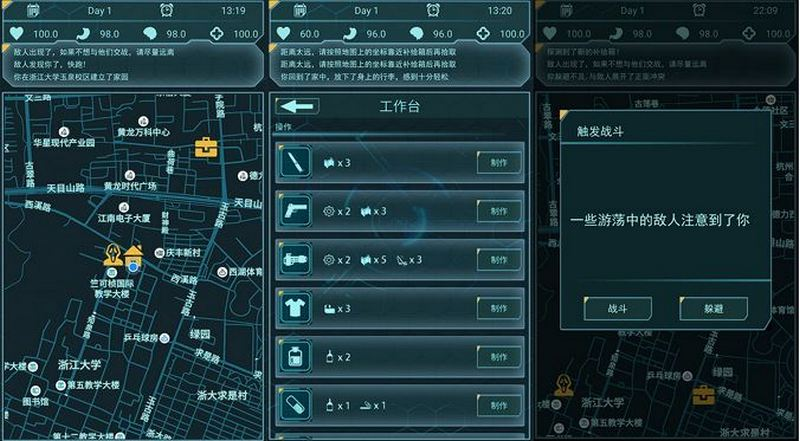

Dead Diary
April 2017 - June 2017
position: Programmer & Designer & Artist
Overview
Dead Diary is a Location service based mobile game. It's a personal project. My inspiration came from Ingress. The background of the game is set as the world of waste after the nuclear war. The core gameplay is to collect items in this world, update home equipments, fight with the enemies, and the most important, survive as many days in the game as possible.
What I Did
- Designed gameplay mechanics. Wrote all text contents.
- Imported Baidu map SDK in Android Studio to develop map, location, and icon functions.
- Developed all game mechanics including home update, collecting items, and battling.
- Designed the art style. Made all the layouts and icons.
- Implemented game saving functions
screenshots
